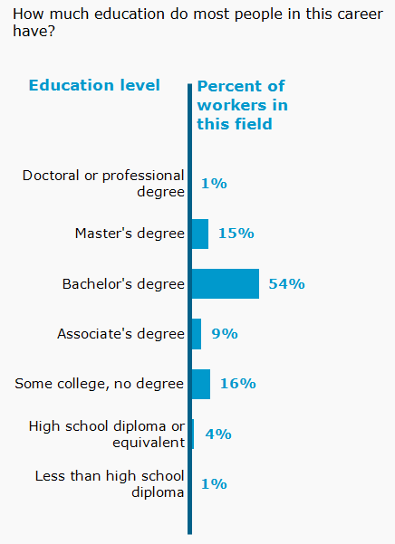

Education & Training

Based on the education data provided in the chart, a Bachelor's degree is the most common qualification for professionals in this field, held by 54% of workers. Higher education plays a dominant role overall, with 15% of employees earning a Master's degree and 1% holding a doctoral or professional degree. At the same time, alternative training paths like bootcamps and self-study remain viable and account for a notable share of the workforce.